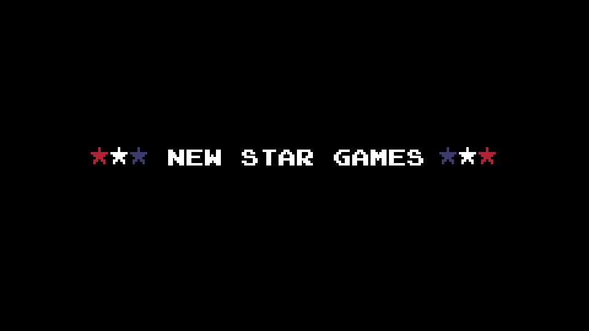

Retro Aesthetics
The game boasts charming retro graphics and sound effects, reminiscent of classic sports video games, providing a nostalgic experience for players.



Retro Bowl combines American football gameplay with team management. Players act as both the manager, handling roster decisions and morale, and the quarterback during games. The objective is to score by either running or passing the ball, while strategic decisions affect the team's performance. Wins improve your team, leading towards the season's goal: winning the Retro Bowl championship. Success in the game relies on balancing team management with skillful play execution, encapsulated in a nostalgic, retro gaming experience.
Start by selecting your favorite team. Customize your team's name, jersey colors, and roster as you progress.
Before hitting the field, manage your team's roster, sign new players, and handle press duties to boost morale. Your management decisions affect your team's performance.
Gameplay is turn-based, with offensive plays focusing on passing or running the ball. Use the on-screen buttons or keyboard keys to control your quarterback's throws and your players' movements.
Gameplay is turn-based, with offensive plays focusing on passing or running the ball. Use the on-screen buttons or keyboard keys to control your quarterback's throws and your players' movements.
Aim to score touchdowns, field goals, or two-point conversions. Manage the clock and use your team's strengths to outscore the opposition. Winning games improves your team's standing, leading to playoff opportunities and the chance to win the Retro Bowl championship.
The game boasts charming retro graphics and sound effects, reminiscent of classic sports video games, providing a nostalgic experience for players.

Players have the opportunity to manage their team off the field, making decisions about roster changes, player signings, and other managerial aspects that affect team performance.

Retro Bowl allows for the customization of team names, colors, and logos, giving players a personalized gaming experience.

The game is designed with straightforward controls for both offense and defense, making it accessible to players of all skill levels while still offering depth in gameplay.

Players need to make strategic decisions, whether it's choosing between running or passing plays on offense or managing the team's morale and resources off the field.

With no energy systems or playtime limits, players can enjoy Retro Bowl for as long as they like, whether it's a quick game or hours of in-depth team management and gameplay.